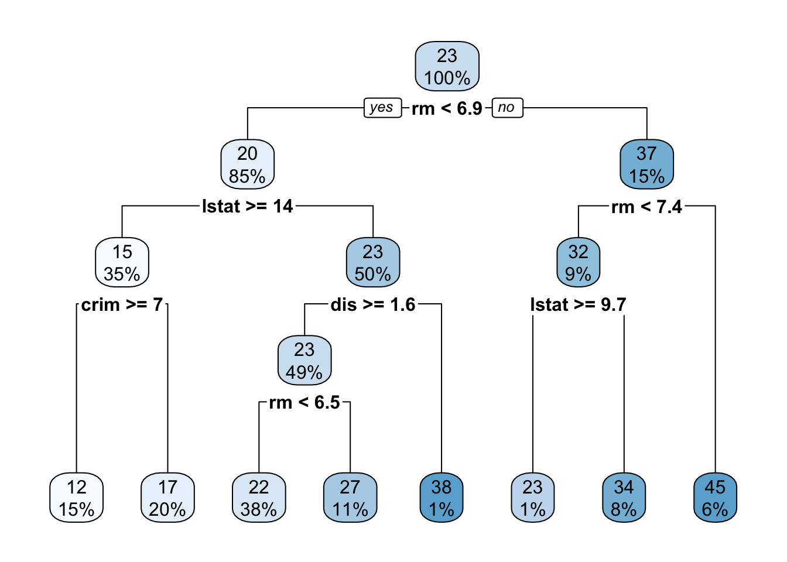

library(rpart)
library(rpart.plot)
library(MASS)
dtree <- rpart(medv ~ . , data=Boston)
rpart.plot(dtree)
November 3, 2026
\[ $\newcommand{\Xcal}{\mathcal{X}}\newcommand{\R}{\mathbb{R}} \newcommand{\E}{\mathbb{E}} \newcommand{\V}{\mathbb{V}} \newcommand{\P}{\mathbb{P}} \newcommand{\C}{\mathbb{C}} \newcommand{\bbeta}{\mathbb{\beta}} \newcommand{\bone}{\mathbf{1}} \newcommand{\bzero}{\mathbf{0}} \newcommand{\ba}{\mathbf{a}} \newcommand{\bb}{\mathbf{b}} \newcommand{\bc}{\mathbf{c}} \newcommand{\bv}{\mathbf{v}} \newcommand{\br}{\mathbf{r}} \newcommand{\bw}{\mathbf{w}} \newcommand{\bx}{\mathbf{x}} \newcommand{\by}{\mathbf{y}} \newcommand{\bz}{\mathbf{z}} \newcommand{\bX}{\mathbf{X}} \newcommand{\bA}{\mathbf{A}} \newcommand{\bB}{\mathbf{B}} \newcommand{\bC}{\mathbf{C}} \newcommand{\bD}{\mathbf{D}} \newcommand{\bu}{\mathbf{u}} \newcommand{\bU}{\mathbf{U}} \newcommand{\bV}{\mathbf{V}} \newcommand{\bI}{\mathbf{I}} \newcommand{\bH}{\mathbf{H}} \newcommand{\bW}{\mathbf{W}} \newcommand{\bK}{\mathbf{K}} \newcommand{\bR}{\mathbf{R}} \newcommand{\argmin}{\text{arg\,min}} \newcommand{\argmax}{\text{arg\,max}} \newcommand{\MSE}{\text{MSE}} \newcommand{\Fcal}{\mathcal{F}} \newcommand{\Dcal}{\mathcal{D}} \newcommand{\Ycal}{\mathcal{Y}} \newcommand{\Ocal}{\mathcal{O}} \newcommand{\bv}{\mathbf{v}} \newcommand{\Tr}{\text{Tr}} \newcommand{\Ccal}{\mathcal{C}} \]
Outline:
Up to this point, we have introduced a variety of tools for classification and regression. In the regression context, we took OLS as our basic model and extended it in a variety of ways:
We first derived OLS as the MSE-ERM among linear predictors, showing that OLS is ‘right’ for any problem where we want to predict a mean, even if there are no Gaussian assumptions in sight.
Analyzing the MSE loss, we found our bias-variance decomposition, showing that we could break down test error into a sum of distinct components.
Ridge and Lasso regularization allowed us to control the size of the regression coefficients in either a ‘Euclidean’ or ‘Taxicab’ way.
Moving beyond linearity, we saw how (polynomial) feature expansion could be used to get a better approximation to the underlying relationship, at the cost of increased statistical instability (variance).
To counteract this increase in variance, we used a variety of techniques:
To move from regression to classification, we first detoured through generalized linear models, which replace the normal sampling distribution with a different distribution on \(Y\).
Other important classification families:
The central motif of all of our analysis was the Scylla-and-Charybdis of bias and variance. We principally worry about variance, which we tame by using simpler (less ‘complex’) models or larger data sets; when we have enough data to make variance a (relative) non-issue, we focus on reducing bias by using non-linear methods
This complexity calculus re-appeared throughout our work, informing our discussion of hyperparameter selection, different model families, hold-out sets, model calibration, etc.
While this journey has gone many places, we never quite stepped away from one of our earliest assumptions:
\[\hat{f} = \argmin_{f \in \Fcal} \text{TrainingError}(f) + \lambda \text{Regularization}(f) \tag{R-ERM/SRM}\]
Building on this ERM paradigm, we have always looked for the (singular) best fitting model. While we sometimes ‘slanted’ away from pure training error minimization, we still took it for granted that there was one model we would use. Today, we begin to relax that assumption.
The study of using multiple models together in a smart way is called ensemble learning.
Ensemble learning relies on the idea that multiple models, smartly combined, can do better (on average) than any single model. We can divide ensemble learning into two broad schools:
(Weighted) Combination of Models: in these models, we use a weighted average (or similar) of models in hopes of a ‘wisdom of the crowds’ phenomenon. We know that we can’t guarantee one model to always beat another, but we hope that by taking an average, the errors of each model will average out and we’ll wind up somewhere better than any individual input model.
I like to think of these ensemble strategies as parallel. We fit many models ‘unaware’ of each other and then combine them ex post.
Repeated improvement: given one model, we know when it gets the right answer and when it makes mistakes (at least on our training data). Is it possible to fit a new model that doesn’t attempt to predict \(Y\) directly, but instead targets \(Y - f(X) = Y - \hat{Y}\). This model serves as a ‘corrective’ to the original model and (hopefully) improves its performance. We repeat this process again and again (correcting the corrected corrections…) until we have a very powerful ensemble.
These strategies are inhernetly sequential: we can’t build the corrector until the original model has been fitted and tested.
Let’s begin by focusing on our parallel strategies: before we work out details, let’s pause to think about what situations (if any) we might expect a sort of weighted average to help us out.
For simplicity, we’ll focus on MSE-loss in the regression setting, though there’s nothing regression specific to the techniques we’re going to look at.
Suppose that we want to predict the outcome of some variable \(Y\) using two statistically independent predictors \(\hat{Y}_1, \hat{Y}_2\): if arguendo we assume these are unbiased, the MSE of each prediction is simply
\[\begin{align*} \MSE_{\hat{Y}_i} &= \E_{Y, \hat{Y}_i}[(Y - \hat{Y}_i)^2] \\ &= \E_{Y, \hat{Y}_i}[(Y - \E[Y] + \E[Y] - \hat{Y}_i)^2] \\ &= \E_{Y, \hat{Y}_i}[(Y - \E[Y])^2 +2(Y - \E[Y])(\E[Y] - \hat{Y}_i)+(\E[Y] - \hat{Y}_i)^2] \\ &= \E_{Y}[(Y - \E[Y])^2 +2\E_{Y, \hat{Y}_i}[(Y - \E[Y])(\E[Y] - \hat{Y}_i)]+\E_{\hat{Y}_i}[(\E[Y] - \hat{Y}_i)^2] \\ &= \sigma_Y^2 + 2\E_{Y}[Y - \E[Y]]\E_{\hat{Y}_i}[\E[Y] - \hat{Y}_i)] + \sigma^2_{\hat{Y}_i} \\ &= \sigma_Y^2 + \sigma^2_{\hat{Y}_i} \end{align*}\]
(Why do the cross terms vanish?) That is, the MSE is simply sum of the ‘irreducible error’ associated with the best possible prediction (\(\sigma_Y^2\) against the optimal prediction \(\E[Y]\)) and the variance (error) in \(\hat{Y}_i\) as an estimator of \(\E[Y]\).
If \(\hat{Y}_1, \hat{Y}_2\) are both predictors of \(Y\), it is natural to ask if we can do better using a combination of the two of them than we can with either separately. Indeed, if we let \(\widehat{Y} = \frac{1}{2}(\hat{Y}_1 + \hat{Y}_2)\), the above analysis tells us:
\[\begin{align*} \MSE_{\widehat{Y}} &= \sigma_Y^2 + \sigma_{\widehat{Y}}^2 \\ &= \sigma_Y^2 + \V\left[\frac{\hat{Y}_1 + \hat{Y}_2}{2}\right] \\ &= \sigma_Y^2 + \sigma_{\hat{Y}_1}^2/4 + \sigma_{\hat{Y}_2}^2/4 \end{align*}\]
How does this compare to the separate predictions? Well, if \(\sigma_{\hat{Y}_1} = \sigma_{\hat{Y}_2}\), then we have clearly reduced our expected MSE by half of the variance error. (By definition, we can’t do anything about the irreducible error.) If, on the other hand, one predictor is much better than the other, say \(\sigma_{\hat{Y}_1}^2 = 400 \sigma_{\hat{Y}_2}^2\), then we have
\[\begin{align*} \MSE_{\hat{Y}_1} &= \sigma_Y^2 + 400 \sigma_{\hat{Y}_2}^2 \\ \MSE_{\hat{Y}_2} &= \sigma_Y^2 + \sigma_{\hat{Y}_2}^2 \\ \MSE_{\widehat{Y}} &= \sigma_Y^2 + 100.25 \sigma_{\hat{Y}_2}^2 \\ \end{align*}\]
So we don’t beat the superior predictor (\(Y_2\)), but we comfortably beat the inferior predictor (\(Y_1\)). Notably, if we didn’t know which predictor was better and had to select randomly (50/50), we would have an expected MSE of \(\sigma_Y^2 + 200\sigma_{\hat{Y}_2}^2\), so the ‘averaging’ predictor is still better. More generally, if \(\hat{Y_1}\) is sometimes better and \(\hat{Y_2}\) is better at other times, a suitable averaging strategy will do better in the long run than using a single predictor. (We should pick the averaging weights as a function of the variance of the two approaches and the relatively frequencies of the \(\hat{Y}_1\)-better and \(\hat{Y}_2\)-better scenarios.)
This example - simple as it is - gets at the core insight of stacking: if we have several ‘good enough’ models, we can do better - sometimes much better - by using a combination of them. This is not guaranteed - if \(\hat{Y}_2\) is always the ‘lower variance’ model, adding in some \(\hat{Y}_1\) pretty much always hurts - but we do not expect to have a single ‘dominant’ model. (See earlier discussion of the No Free Lunch Theorem.) In practice, we typically find ourselves armed with models of similar-enough performance (logistic regression, linear SVMs, RBF Kernel SVMs, RBF Kernel logistic regression) and find that different models perform better on different inputs. E.g., the ‘linear’ models might do well far from the decision boundary, while the ‘kernelized’ models might improve performance near the decision boundary while suffering from extra ‘wiggliness’ (variance) far from the decision boundary.
So what can we take away from this discussion?
Low correlation among predictors is helpful. If our base learners give the exact same predictions at every point, there’s nothing to be gained by combining and comparing them.
Put another way, ensemble learning benefits from a diverse set of base learners. We hope to ‘combine strength’ from different approaches to build an ensemble predictor that is better than any of its individual components.
The three major ensembling techniques we will cover - stacking, bagging, and boosting - essentially come down to different ways of getting this diversity.
The hope of ensemble learning is that by combining several simple, but flexible base learners we can achieve performance beyond that of any model. Because a (linear) average of linear models is still linear, we might hope that ensemble learning is at its best in situations where our base learners are:
and that we don’t really need to worry about variance all that much. This suggests it is time to introduce the final base learner of this unit, the humble decision tree.
You are almost certainly already familiar with decision trees through diagrams like this:
library(rpart)
library(rpart.plot)
library(MASS)
dtree <- rpart(medv ~ . , data=Boston)
rpart.plot(dtree)
Here, the tree is evaluated by applying a series of univariate1 binary decision rules ‘downwards’: that is, at each step, we ask one step about one variable and take the left or right branch as appropriate. The final terminus (or ‘leaf’) of the tree is then our prediction.
Decision trees are incredibly popular because they are easy to apply ‘mentally’ and suggest natural interpretations. Variables which are used to split early or split often are more important. Interestingly, decision trees also can be used to give an ‘intermediate prediction’ which is what we would get by stopping the prediction at that point. Splits which materially change the intermediate prediction are also more important.
But how should we actually fit a decision tree to data? This is, like so much in machine learning, the sort of thing which is easy to understand intuitively, but comes with a significant amount of bookkeeping in practice.
Essentially, trees are fit by repeatedly asking the question: “What split would most reduce the error if my predictions stop here?” So, for the first split, the tree looks at each variable to determine its optimal split point, and then finds the optimal variable to split on. To find the optimal split point, we need to sort the data on that variable and then compute the ‘before’ and ‘after’ variance for each value. After finding the first split, the two ‘second level’ splits repeat this process on only the data in their path. That is, the two ‘second level’ splits are found on different data. The four ‘third level’ splits are found on four different data sets, etc.
Because the later splits are computed on different data sets, they almost always select different variables at each level (as in our example above, where the two ‘level two’ splits use the lstat and rm variables). Predictions are made by taking the average (or majority) of data left in that split.
Note that the splits need not be and typically are not ‘even’ splits along a variable. E.g., if we were doing a split on a variable that looks like
| Variable | Value |
|---|---|
| 1.0 | 1.0 |
| 1.1 | 0.9 |
| 1.2 | 1.1 |
| 1.3 | 1.4 |
| 100 | 500 |
| 105 | 550 |
The optimal split is clearly something like \(\texttt{Variable} < 1.3\) with conditional predictions of \(1.1\) and \(525\) in each split and split sizes of \(4\) and \(2\).
Clearly, if the tree is allowed to run ‘to completion’, there will be one data point left in each leaf and the tree can obtain 0 training error. That is, maximal decision trees are a very high complexity (low bias, high variance) model. On the other extreme, a ‘single split’ tree (often called a ‘stump’) will be low complexity (high bias, low variance). So we can take tree depth (number of levels) as a good proxy for model complexity. Like \(K\)-Nearest Neighbors, we can pick depth (complexity) by a suitable cross-validation or train-test scheme, but will soon see a better way.
Some other notes on trees:
CART (Classification and Regression Trees) or rpart (Recursive Partitioning) but most folks will know the term “decision trees” so I just use that.NA as very high or very low or use an explicit is.na decision ruleThere are tons of tiny little decisions in building trees, so I don’t recommend writing your own implementation. See, e.g., ?rpart.control for the fitting parameters used by the rpart package: other software will have similar options.
This model can be generalized to decisions like \(3x_1 + 2x_2 < 5\) instead of simple univariate rules like \(x_1 < 2.5\). These sorts of trees, often called oblique trees because they have decision boundaries that are not axis-aligned, are rather more difficult computationally, so you won’t see them used as much, but they are popular among theory-minded researchers.↩︎